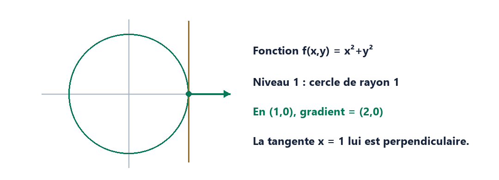

Comprendre le cours
1. Choisir ce que l’on compte
Une union rassemble les éléments de deux ensembles. Si les ensembles se recoupent, soustrais leur intersection quand tu ajoutes leurs effectifs. Un produit cartésien forme les couples possibles et garde l’ordre des composantes. Une injection donne des images distinctes à des entrées distinctes. Une surjection atteint chaque élément de l’ensemble d’arrivée. Une bijection réunit les deux propriétés.
Avant de dénombrer, demande si les répétitions sont autorisées et si l’ordre compte. Pour sélectionner p éléments parmi n sans répétition, les arrangements ordonnés valent n!/(n−p)!. Les combinaisons valent ce résultat divisé par p!, car chaque groupe de p éléments peut s’ordonner de p! façons.
2. Résoudre une équation différentielle du premier ordre
Dans y′+ay=f(x), l’inconnue est une fonction. L’équation homogène a f=0 et ses solutions sont Ke−ax. Pour le cas avec un second membre, trouve une solution particulière. Si le second membre est constant et a≠0, essaie une solution constante. La solution générale est la somme des deux familles.
Pour appliquer la variation de la constante, remplace K par une fonction g(x) dans la solution homogène. En substituant dans l’équation, il reste g′(x)=f(x)eax. Intègre cette expression et utilise une condition initiale pour fixer la constante.
3. Classer les équations homogènes du second ordre
Pour ay″+by′+cy=0 avec a≠0, associe le polynôme ar²+br+c. Deux racines réelles distinctes donnent deux exponentielles. Une racine réelle double donne une exponentielle multipliée par K₁+K₂x. Deux racines complexes conjuguées donnent une exponentielle réelle multipliée par une combinaison d’un sinus et d’un cosinus.
Deux conditions initiales permettent le plus souvent de fixer les deux constantes. Vérifie la solution à la fois dans l’équation et dans chaque condition initiale.
4. Dériver selon une seule direction
Pour dériver f(x,y) par rapport à x, tiens y fixe. Le gradient rassemble les deux dérivées partielles. Dans les conditions de différentiabilité du cours, si le gradient ne s’annule pas sur une ligne de niveau, il y est perpendiculaire à la tangente.

Le plan tangent à la surface z=f(x,y) en (x₀,y₀,z₀) s’écrit z=z₀+fₓ(x₀,y₀)(x−x₀)+fᵧ(x₀,y₀)(y−y₀). Pour une trajectoire t↦(x(t),y(t)), dérive les coordonnées et utilise la règle de chaîne si la question porte sur une valeur de f le long de ce trajet.
Du cours aux TD et TP
Les supports retrouvés sont les trois fiches de référence. Les cas ci-dessous sont des applications de leurs méthodes, avec des données choisies pour permettre de refaire chaque calcul.
Questions TD & TP
Application de la fiche I · Choisir trois étudiants parmi huit
Exemple d’application. Choisir trois personnes parmi huit, puis attribuer à trois personnes distinctes les rôles de président, secrétaire et trésorier.
- Les rôles sont distincts, donc il y a
8×7×6=336possibilités. - Pour un groupe sans rôle, chaque groupe a été compté
3!=6fois dans ce total. Il reste336/6=56groupes.
Application de la fiche II · Résoudre y′+2y=6 avec y(0)=1
Exemple d’application. Trouver la solution du premier ordre puis contrôler l’équation et la valeur initiale.
- L’homogène donne
Ke−2x. La constante3donne une solution particulière, car0+2×3=6. - À zéro, la solution complète vaut
K+3=1, doncK=−2. On trouvey=3−2e−2x. - Sa dérivée vaut
4e−2x. En ajoutant deux fois y, les exponentielles s’annulent et il reste 6.
Application de la fiche II · Traiter le cas d’une racine double
Exemple d’application. Résoudre y″−4y′+4y=0 avec y(0)=2 et y′(0)=7.
- Le polynôme caractéristique est
(r−2)². La solution prend la forme(A+Bx)e2x. - La valeur initiale donne
A=2. Après dérivation, à zéro il resteB+2A=7. On obtientB=3.
Application de la fiche III · Lire le gradient et les tangentes
Exemple d’application. Pour f(x,y)=x²+y², trouver le gradient en (1,0), la tangente à la ligne de niveau 1 et le plan tangent à la surface.
- Les dérivées partielles valent
2xet2y. En(1,0), le gradient est(2,0). - La tangente est perpendiculaire au gradient, donc verticale. Elle passe par
(1,0)et a pour équationx=1. - La hauteur au point vaut 1. Le plan tangent vaut
z=1+2(x−1)=2x−1. Vérifie qu’il passe par le point(1,0,1).